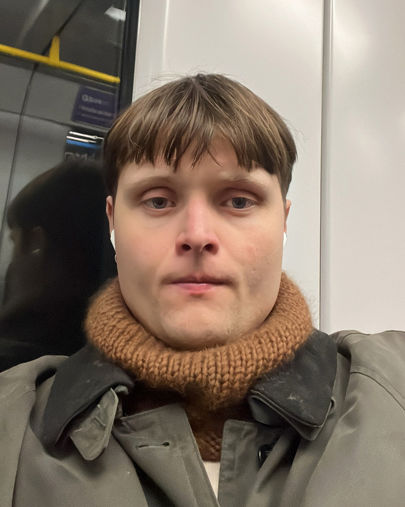

Felt cute might delete later, examensarbete, graduation project, VK17:302, 22,5 hp, Utbildningsnämnden för Visuell kommunikation, Grundnivå
Tisdag 11 frebruari /
Move towards the unimportant
Jag lyssnar bara på mechatok_bladee_glädjeklockor.mp4 och mechatok_bladee_försöker_ft.toxe.mp4. Lyssnade på Holly Herndons podcast, avsnittet om det här med training data, att de gjort en utställning tillsammans i samband med boken Peter tipsade om. De berättade om hur LLM ger fundamentalt annorlunda resultat beroende på training data. En kommentar på soundcloud tyckte de var bedrövliga och att de förstörde för både konstnärer och musiker genom att vara okritiska inför ai. Fair, I guess. together-online.net är ett examensprojekt från Sandberg. Jag vill absolut söka dig, men behöver nog tid för att i lugn och ro kunna landa, pröva massa dumma idéer, läsa på, vara seriös och oseriös utan höga krav. Imorse insåg jag att webbet som medium, med rörlig grafik och… publikationsaspekten i åtanke… intresserar mig. Det lämpar sig för bra. Igår pratade jag mycket med T, som har svårt att själv motivera görandet, skapandet, producerandet av ny visuell kommunikation. Däremot har hon inte svårt att se vitsen med juridik och ekonomi. Kanske för att hon tycker illa om kommersiella verksamheter, eller rakt ut sälj-ställen. Kanske för att hon är, som jag med många andra, fostrad i en miljö som värdesätter… traditionella yrkesbanor. Helt ärligt typ, advokat, läkare och ekonomer… Allt annat är liksom, själviskt. Jag tror det är för att hon inte tycker om konst. Det jag syftar på är… uttryck, estetiska, kulturella uttryck. Istället värdesätter hon intellektuella, akademiska arbeten och konsthögskolor med det i fokus. Ingen konst eller hantverksfantast, liksom. Vi pratade om vad som behöver vara stoffet, själva kroppen som utgör examensarbetet. Om det är ett… tankegods som jag illustrerar som blir mitt arbete. Dvs. att det är tankarna och idéerna som är i centrum, eller om det är och borde vara själva görandet. Det kan givetvis betyda väldigt olika saker. Liksom, duh, det är klart det är görandet. Som t.ex. att samla ihop texter och ta / låna bilder från internet och sätta ihop det i en trycksak. Det blir arbetet, och kanske är skrivandet en viktig komponenent, men det är själva klipp och klistrandet som jag jobbar med.
Metod förvirrar lite. Jag kan tänka mig göra lite som i designresearch-kursen med Ehlin, att bestämma mig för att låta processen bli själva innehållet. Kanske att se det som att mitt arbete är att jag ska läsa, förstå, titta och prata med andra om "information". Med vetskapen om att det blir ett tungt, troligtvis grunt arbete där jag inte kommer förstå allt, inte bottna i allt… Men att mitt arbeta blir att jag utifrån det grundarbetet förenklar en gång, med ambitionen att göra det förståeligt för andra. Kanske se det som en… tårta… med pyramid-form. Toppen av pyramiden (iofs inser jag att den kanske behöver vara uppochnedvänd för att jag inte ska "sätta mig själv högst upp") är enklaste, ytligaste planet som illustrerar vad jag menar. Mellanplanet är att jag för mig själv och för andra försöker begripa och dra kopplingar. Sortera och gruppera olika tankar. Bottenlagret under det kanske … all research, ofiltrerat. Kanske blir det en relevant jämförelse med befintliga maktstrukturer och mediala narrativ om tjänsterna vi använder. Det blir grafiskt och enkelt att förstå. Kanske kan jag visa 2 pyramider, en rättvänd, en uppochned. Den ena är mitt arbete i examen, med att förstå och förenkla min research. Den andra är hur beslut fattas i olika position av pyramiden. Just det, jag menar nog inte en tredimensionell pyramid, utan snarare en triangel. Att inte ifrågasätta infrastrukturer och informationsnormer är att befinna sig… längst ned, men samtidigt på toppen. Just det, detta blir som toppen av isberget. Fan, jag tror ändå det finns någon slags potential.

Lista av sätt att applicera eller tänka genom tre punkter, pyramiden eller triangeln:
1. Planera olika sätt att jobba mellan fördjupning, förenkling och förklaring. Tre (?) lager av research: ett brett, ofiltrerat, ett mer förenklat, som drar slutsatser. Ett ytligt, som ELI5:ar? Eller illustrerar, med bild och PANG!
2. Jag, grafisk form och journalistik. Mitt arbete blir triangeln?
3. Gestalta… maktstrukturer. Desto mer du förstår, desto mer makt har du. Du=medborgare, men också hela samhället.
3.1. Jämföra med historiska illustrationer av makt… Feodalsamhället, kapitalismen, Bourdieu-illustrationer/kartor.
3.2. Ifrågasätta vilket "håll" triangeln borde vara på när den visar kunskaper, makt och "informationsflöden"
Punkter att fundera över:
Vilka missuppfattningar orsakar illustrationer av maktförhållande. Eftersom de inte är tvådimensionella eller alltid linjära, utan samverkar på flera plan, genom olika kanaler.
I vilket skede av arbetet behöver jag börja med lager två av mitt arbet?
Just det. Det jag menar med avsmalning är ju inte ens en triangel? Haha… Det är… bara att något blir smalare. Men sedan kom jag att tänka på hur det är relevant för
Måndag 10 februari / "Seminarium", Hdk-valand
Stanza.dk, Post "seminarium" med Maja, Tiffany, Emilia och jag. Om… frågetecken kring examensarbete, inte kunna planera sin tid, att vara osäker på vad ett vk-arbete är. Särskilt vad som ryms inom begreppet "grafisk design". Vi pratade en del om skillnader mellan våra olika lärares syn på hur viktigt examensarbetet är, och att Peter och Laslo har en lite mer avslappnad inställning, och ser det kanske mest som en period för att lära sig något. Vi var fundersamma över hur det kommer sig till den tydliga uppdelningen mellan grafisk designs "upplaga" och "artist's book". Jag spekulerar kring att det handlar om en kommerciell tradition. Rimlig, riktig, distribution, är den som lämpar sig bäst för att säljas. Eller… som ett konst-bok, dvs. hemmagjord är motsvarigheten till ett konstverk, där tid och material är det dyrbara, inte… innehållet. Jag ligger i lä, oavsett vad jag gör eller inte gör, eftersom Tiff tänker sig göra en pdf, och påstå att det handlar om distribution, vilket det förstås gör. Ha!
Söndag 9 februari / Afraid of Elon Musik, In love with Engla, Grateful for my friends, Optimism
Critical practice in graphic design, Katarina Balážiková. Plattform på internet jag snubblade över när jag googlade om Jan van Toorn. Han har tydligen skrivit en bok som heter Design’s Delight. Jag har inte läst (hittat) den, funderar på att mail:a vk-lärarna och fråga om någon har den eller vet var den kanske finns. På "Critical Daily" har de skrivit om boken, som är visuella experiment, typ collage med kortare meningar som sprids ut över uppslag med bilder plockade … tidningar, typ. Mediala bilder och till det är text på nederländska och engelska placerade på vis som utmanar läsaren. Beskrivningen och texten kring boken beskriver vilken potential och påverkan grafisk form och visuell kommunikation i stort kan ha. Särskilt utifrån förutsättningen att… i vår tid… är vk-discipliner huvudsakligen förknippade med nyliberala spektakel.
På Critical daily finns massor av intressanta nedslag och jag får nytt hopp om grafisk form, om de kloka, kloka perspektiv som finns hos grafiska formgivare. Untold stories kom fram när jag googlade Ruben Pater. Han verkar väldigt kul och intressant. Hans bok Caps lock verkar helt sjuk, köper nog den.

Capitalism could not exist without the coins, banknotes, documents, information graphics, interfaces, branding, and advertisements made by graphic designers. Even anti-consumerist strategies such as social design and speculative design are appropriated to serve economic growth. It seems design is locked in a cycle of exploitation and extraction, furthering inequality and environmental collapse.
Hans texter och info är här: index . Jag ❤ ❤ ❤ socially aware graphic design. https://www.naibooksellers.nl/design-s-delight-method-and-means-of-a-dialogic-practice.html?___store=english&___from_store=default
Lördag 8 februari / Post Baltazar
Adam Arinbjarnarson
Initiala tankar / uppdragsformulering, ett eller flera spår:
Jag vill undersöka relationen och skillnader mellan 1. journalistik och 2. grafisk design. kanske ryms (bild-)konst någonstans i “grafisk design”, när jag skriver det här.
Utgångspunkt i diskursen kring “information crisis”, post-truth, “desinformation”. Värt att nämna: själva krisen i sig är lika intressant som dess inramning, narrativ och vanliga liknelser.
Intressant pga: Båda hanterar språk, påverkas av (påverkar…) teknologi och politik och båda spelar stor roll i att forma information. Båda förändras radikalt med internet och algoritmers entré. Båda automatiseras och “effektiviseras”, (men vad gör inte det?)
Zeitgeist-relevans: Att veta vs känna (det har varit “ute” att veta sedan ett tag tillbaka, och “inne” att känna)
Strävan är att förmedla och reflektera över “informationskrisen” ur ett konstnärligt, empatiskt människo-perspektiv. Samtidigt också… belysa fakta från olika perspektiv. Dvs, hur ter sig “informationskrisen”
Jag vill inte: säga att allt är dåligt, att alla är dumma, att alla är stygga, eller sparka in öppna dörrar
Teori jag funderar på:
Post-modernism (konst), Post-strukturalism, Actor network theory, foucault
Område:
Grafisk design ❤
Fredag 7 februari / Kort presentation, många ord
Feedback: avgränsa.
Jag känner att jag svamlar och att allt är tydligare i text.
Peter tipsar om "Holly Herndon", och föreslår att faktiskt tillåta sig dyka ned i kaninhålet. Han erbjöd att sambeställa för att dela på frakten: för boken All Media is Training Data.
Tillbaka till den enkla jämförelsen mellan information och konst. Jämför post-modern konst med post-truth. Jämför Post-faktuell politik med post-strukturell teori. Det är det det handlar om. Jag borde välja huruvida det ska vara i dialog med massa olika disciplin eller… om jag borde välja typ 1. I jämförelse med mig själv...
1. Journalistik och konst.
2. Post-fakta och (som) poesi.
3. Veta och känna.
Är dualiteter, dikotomier och motsättningar något som behöver vara återkommande och synligt. Hinner jag, kan jag, borde jag jämföra flera olika saker för att jag tycker det finns relevanta paralleller mellan olika ämnen. Som i konst och kultur. Där är överenskommelsen att innehållet kan ifrågasättas men inte nekas, inte motbevisas, avsändarens mening är jämställd med motståndaren. Det är postmodernism. I post-faktuella sammanhang sker samma rörelse, där innehållet inte heller kan krävas på förklaring. Det handlar om affekt och resonans, inte sanning. Med det som vägledning för arbetet, själva stoffet och estetiken (en enkel frågeställning)… Hur kan jag på något lägga till reflektion i det tänket. Jag ser det som att jag skriver en labbrapport i grundskolans NO.
Jag har: Titel, syfte, hypotes, material, metod, resultat, analys och slutsats. Slutligen diskussion.
I detta sättet att arbeta blir det relevant för mig att ifrågasätta hur lämpligt det är att jag pratar med andra människor på riktigt. Hur viktigt är det att det förhåller sig till grafisk design som yrke och kunskapsfält? Å ena sidan lämpar det sig för mig att arbeta utan det i åtanke, att bara samla ihop information och prata och göra en tidining helt enkelt. Och se det som en form av visuell journalism. Å andra sidan, däremot… finns det värden i att jag funderar över vad jag vill att tematiken ska säga om fältet jag ger mig in i. Vill jag liksom… slå ett slag för designerns roll? Eller betona att god grafisk design måste vara… upplyst och kritisk. Jag tycker såklart det men det kanske inte måste tatuera det i ansiktet under projektets gång för att det ska märkas.
"Not understanding the information crisis as a designer",
"Understanding the scientific mis-understanding the information crisis"
"The crisis behind the information crisis"
"Economics, information crisis and fine arts"
"Information as a form of art, a.k.a. the information crisis"
"The art of information"
"Anti democratic post modern art"
Jag kanske håller på att bli sjuk, jag lyssnar på NTS, I am a bit of a poser. Jag ska läsa examensarbetens processbeskrivningar. Det känns väldigt privat att läsa förra årets klass eftersom det är så nära och jag känner igen mig. Salmahs verkar oerhört klok. Jag tänker också över hur jag borde smälta återkopplingen jag fick på handledningen. Jag kände viss frustration över att idéer smittar av sig på andra i klassen, åt båda hållen. Att formulera andras idéer är typ roliga och mer intressanta, att bygga på det någon redan är i. Jag känner ofta när jag lyssnar på t.ex. Emilia att jag "litar" helt på mina råd jag ger henne. Lol! Det jag menar är att jag tycker det känns självklart vad hon borde göra av sina idéer, något jag aldrig känner med idéer jag har själv. Jag undrar om det handlar om att jag är rädd för att välja. Rättare sagt, rädd för att välja fel, att kill my darlings. Det är skönare att stanna kvar i att ha alla dörrar öppna, att kunna få det till vilken stor, bra idé som helst. Det stjälper, helt klart. Det gör att jag inte vågar stå för någon idé och slutar istället med att ha bara… en massa ord. Spår. Den upplevda risken i mitt huvud är att jag kommer välja en idé som faller platt, som inte kommer kännas inspirerande mer. Det är nog i och för sig risken oavsett. Jag tror en styrka jag borde luta mig på är att jag vill vara politisk, från flera perspektiv. Jag känner också att jag behöver trotsa instinkten att inte vara politisk, att inte ta ställning. CWA kommer behöva hantera att jag blivit kommunist. Skämt åsido, jag tycker och känner starkt. Det är i detta sammanhang en styrka, att jag har något som leder mig vidare, som när min kritiska blick på både samhälle och design. Jag ska fortsätta bottna men jag tycker inte jag borde smalna av och … göra något mildare… för att inte… trampa någon på tårna. Eller för att kanske förlora någon slags apolitisk, neutral position. Allt är politik. Jag måste ta höjd för det, jag behöver stå för det. Ibland kommer jag på mig själv med att tänka att jag önskar jag vore mer som ------------, sval, neutral men ändå sympatisk. Anställbar och inte… kontroversiell. Hon är bara ett exempel, all heder till henne. Till slut landar tankarna i framtid och jobb, att kunna bli anställd, att kunna försörja sig. Lockande på ett vis, på ett annat inte. Jag vill inte rucka på integriteten, på "konstnärsskapet", eller hur jag tycker saker ska låta och se ut eller göras. Just nu lockar det inte mig. Jag är hellre konstnär än reklamare. Men ja… då behöver jag också acceptera att det är ett val, ett beslut, att lyssna på den smaken, att välja bort pengar och den slags trygghet… Det hänger naturligtvis inte enbart på hur mitt examensarbete ser ut. Men vilka signaler jag sänder ut. Är mitt arbete ett anti-kapitalistiskt manifest (lol), slutar jag vara tilltalande för många människor och samarbetsparter. Oh well, det ger sig.
Torsdag 6 februari 17:30 / Agavägen, Sumpan
Jag minns inte vad min plan var att skriva igår… Men jag har tagit tvättmorgon imorse, och det tog längre tid än jag tänkte för att kläderna blev utelåsta när nästa tvättare gick promenad runt Råstasjön i solljus. Jag väntade i källaren! Det sög men kläderna blev rena. Jag tog promenad till skolan och lyssnade på bl.a. P3 Dystopia… Ett avsnitt om desinformation. Det handlade om att sociala mediers innehåll ofta kunde innehålla botar som var köpta av stater eller rika personer, för att under tid bygga upp falska bilder. Active measures, osv. Det blev desto mer intressant när de pratade med experter (forskare) om Cia och KGB. Om att det inte är en ny metod, utan det är sedan gammalt, att påverkansmetoder länge varit att infiltrera eller starta tidningar, kultur-fenomen osv och sedan smyga in skvaller och skitsnack. CIA hade använt sig av jazz-tidningar för att svartmåla kommunistiska öst.
Jag vill inte arbeta med desinformation, åtminstone inte explicit. Det börjar bli dags att formulera sig. Jag ville skriva om Sophias inspiration-presentation igår! Hon pratade om designmanifest, att definiera det man brinner för, det man inte brinner för, vilken plats ens praktik har i samhället, osv. Det var fint och verkligen inspirerande, synd att det verkligen är motsatsen av känslan jag haft i AD-kursen. Så kan det väl bli, förstås. Hon pratade också om att skriva brief till sig själv, att definiera "knasiga" regler innan man sätter igång, att blanda texter från olika sammanhang (haha) utan att det ska bli logiskt, men för att ha det att förhålla sig till, att sätta ihop det. Det är exakt så jag vill göra haha.
Jag tänkte att post truth skulle vara ett bra begrepp… Men i själva verket kanske jag väver in mig själv i fel tid då, eftersom att en google sökning leder mig till… uteslutande… resultat från 2016. Det är klart, iofs. Det var väl då det etablerades brett, i och med Trump. Och min ursprungliga tanke väcktes ju av Trump. Det har blivit relevant. Igen! Det finns många väldigt logiska och bra Ted Talks om postfaktuell politik, som post-truth verkar kallas i akademiska texter. De pratar alla om hur sanning och respekt för den är en fundamental förutsättning för demokrati och att vi just nu ser hot mot den överallt. Och det är sant, och de flesta bryr sig inte. Det är synd att jag känner att det stämmer, utan att känna att det blir en intressant förutsättning för mitt arbete. Men det är också helt sinnessjukt höga krav att ställa på sig själv, att jag ska uppfinna en sprillans ny take på något i samtiden… Jag är ju grafisk designer. Men, jag tänker faktiskt att det finns något intressant i att alla ted talks är så duktiga och bra men att det saknar mening. Hur kommer det sig att vi har pratat post truth i 10 år, med en ofrändrad attityd/trend i samhället. Det är en fråga. En annan är, på vilka sätt behöver vi förstå informationskrisen, eftersom metoderna vi upplever oss ha tillhanda räcker uppenbarligen inte. Det fungerar inte att säga "tänk själv", det fungerar heller inte att lära barn källkritik i skolan. Det var nog också en fråga.
Nyckelord? (inför fredag 7 feb)
1. Område: Grafisk design
1.1. Jag vill göra trycksak (och arbeta redaktionellt)
1.2 Grafiska verk (uppslag, posters, collage, installationer, you name it)
2. Tematik: "Informationskrisen"
3. Metod: Jämföra + belysa olika pespektiv på frågan genom:
3.1. "Sampling": Grafisk design och bilder / Språk (retorik, ton, ord)
3.2. "Text/ jag i dialog": Journalistik, teknik, politik / Konstnärligt
4. Teori: post-strukturalism, teknofeodalism, post truth, anti-kapitalism(syndikalism, anarkism)
5. Inspiration / referenser: Jan van Toorn, Meriç Algün, Album (Mugaas & Storsveen), Jenny Holzer, Roxy Farhat, Göran Hugo Olsson, Beijer/Vetenskapsakademien, Caroline Ringskog?
Kan det vara något att jag fokuserar på respekten för kunskap? Eller att veta, snarare än känna? Möjligen är det ett sätt att peka på det jag menar. Att information ju kan bestå av kunskap. Anledningen till att jag undrar det är eftersom jag lyssnat på filosofiska rummet. I avsnittet pratade de om hur fria universiteten borde vara. Då pratar de om att det hela tiden skiftar i samhällets tilltro till universiteten, som platsen för kunskap. Där den bildas, utmanas, ifrågasätts och underhålls. De pratar om hur delar av befolkningen och riksdagspartier har en ganska liten respekt för att forskare vet bäst, åtminstone att de har spenderat mer tid. På ett sätt är det ju en del i post truth. Att det är moodet i samhället, och att det liksom kan ”angripa själva platsen där folk sysslar med kunskap.
Det kanske dock blir lite osmakligt om jag blandar för många olika frågor med olika grader av allvar… att likställa olika skeenden. Tramsigt och politiskt samtidigt.
22.08
Det slog mig på pendeln hem att jag kanske helt enkelt vill skriva en essä. Jag tror det var det Charlotte Rohde kallade sin You loved an Image? Dock var det en bok, med massor av text… där knasig grafik (utforskande, experimentell, lol). Det tar säkert enorma mängder tid. Jag tänkte även på video-essä som format, eller grafisk novell, som alternativ till text-varianten till dem båda. Det kanske vore som ett rimligt sätt för mig att förhålla mig till slutformatet, att jag kan se helheten som en (eller flera små) essäer som jag kan brodera ut, förstärka och flumma till. Men att jag hänvisar massa till annan text och andra medium genom text och bild. Ett slags reportage? Jag borde se på tidningar som förhåller sig så till text, och som handlar om politik eller akademiska ämnen och inte mode eller konst. Fråga Stefania kanske, eller Laslo!
"Initiala tankar / uppdragsformulering, ett eller flera spår", "Område" . Det är formuleringarna Sophia vill ha tankar på (svar på) imorgon. Jag tycker jag har svarat på dem. Imorgon vill jag ta reda på mer om VISUAL JOURNALISM som Janne snackar om. Finns någon mer som pratar om det, är det etablerat, på vilka sätt är det en bra formulering för det jag vill arbeta med.
Jag var på IB Wahlströms, blev medlem, vill handla papper, vill handla verktyg. Subscribade på en bokbindaryoutuber idag, det var väldigt inspirerande.

Onsdag 5 februari / Brief, metod, manifest
Inte en riktig, utan en GPT4o-skrivelse: Oblique strategy: Use an old idea
Brief och debrief… Designmanifest… Feedback i form av en övning som bestod av fyra papper. Första pappret min idé, formulerad på 15 minuter och en frågeruta till klassen, som gruppvis hade i uppgift att på tre andra papper ge feedback, svara på frågeställning och komma med fördjupande frågor. Det var lärorikt i den bemärkelsen att reflektera över andras texter, idéer och funderingar. Det är viktigt med konceptuell ingång, haha. De ideer som inte utgick från en tematik kändes svårast att bemöta, eftersom "utförandet" kommer av idéen, som bottnar i något som händer "ute i verkligheten". Klassens idéer var ganska lika mina, vissa av dem. Jonatan funderade över botar som interagerade med andra botar. Han pekade på Shrimp Jesus. Också om hur människor interagerar med teknologier de inte förstår mekanismerna bakom… Haha! Lina tänkte över desinformation och "sanningar", att en konflikt alltid har tre sidor, din, min och sanningen. Jag insåg att hon kommer arbeta med samma tematik, men leverera ett resultat som resonerar med publiken som faktiskt kommer på utställningen och är intresserade av skolan… Medan jag kommer göra något som ingen förstår, knappt ens jag själv. I alla idéer och människors papper framgick det tydliga skillnader i hur kärnan av projeketet upplevs olika. Snarare, vad arbetet består av, vad vi kan "åstadkomma". Jag fick feedback som "Är det här verkligen en fortsättning på din konst reklam konst". Svaret är självklart ja, jag känner fortfarande samma inspiration och fascination över det ämnet, även om mitt tillvägagångssätt i att faktiskt hantera text och språk i det projektet var… Lite osofistikerade.

Jag känner inför projektet som står framför mig att jag inte vill använda några "illustrationer" av tankar och strömningar. Istället vill jag verkligen hitta exempel från verkligheten. Jag vill vara i dialog med faktiska människor, jag vill inte hitta på saker själv, jag vill bara hantera saker som faktiskt finns och har sagts och har skrivit. Jag är en mellanhand som enbart förflyttar information från en kontext till en annan. I den förflyttningen kan jag bidra med estetiska grepp, redaktionellt tänkande, överdrift och kanske någon slags abstraktion. Om projektets syfte… märker jag att jag inte resonerar som en del av mina klasskamrater. Jag har ingen entydig slutsats jag vill jobba mot, särskilt inte nu i början av research när jag de facto inte vet något, utan agerar utifrån fördom och förutfattade meningar. Men i stort ser jag att mitt bidrag till samhällsdebatten (om det nu är vad jag gör) inte är ny information, inte ny data, statistik eller någon slags vetenskaplig information. Jag tolkar och samlar andras information. Jag kanske vill illustrera företeelser som kan hjälpa betraktaren att tänka själv, att förstå samband. T.ex. genom att grafiskt visa samband, eller kanaler som hanterar information. Actor network theory, liksom. Annars agerar jag från ett estetiskt perspektiv, som funderar över estetik och språk. Collage? Assemblage? Grafisk design? Något jag borde lägga större vikt vid är begreppet post-truth. Utifrån zeitgest, utifrån hur saker känns (att göra research på: romantiken), i förhållande till ALLVAR, till politik, "realitet". Att inget är sant och ingen bryr sig. Utifrån journalistik, kultur, politik, vetenskap (antropologi, psykologi, sociologi). Utmaning inför att jag ska formulera en problematik: fånga lyssnaren. Det måste kännas aktuellt, även om jag inte "tycker" att det borde behövas. Lite sälj måste idén få.

Tisdag 4 februari / Baras imperium
Oblique strategy: Bridges -build -burn

Inför morgondagens workshop, där Sophia gett ledtråden att vi i klassen ska ge varandra "små presenter". Det handlar om att komma med initiala tankar om vad examensarbetet kommer handla om, ska jag skriva ned tankar om vilket område av vk
jag vill arbeta. Det handlar om grafisk design och digitala medier, dock ur ett teoretiskt perspektiv. Eller… det är sakfrågan, delvis, åtminstone. Jag var på möbelmässan och såg ung svensk form där bl.a. Oscar Hagbergs examesprojekt från förra året ställdes ut. Jag slogs av hur lik ansatsen är min och att jag förmodligen blivit inspirerad. Hans utförande är lite torrare och klassiskt redaktionellt än mitt. Men idén om att samla kunniga människor omkring ett ämne, att uppmana till reflektion, att kalla det ett symposium och att komplettera med ett konstnärligt perspektiv. Först kändes det tungt och som att idén inte var min, men jag tycker tillvägagångssättet är lämpligt för mitt ämnesområde och att i jämförelse med hans projekt vill jag vara med mångtydig. Men vilket proffs han är, ska sägas!
Mitt ämnesområde kan delas upp i mindre beståndsdelar:
1. "Informationskrisen": Desinformation, källkritik, mediers förändring och vår konsumption av den. (I stort, vad experter och opinionsbildare menar händer eller har hänt)
2. Skillnader i språk, attityd, uppfattning i olika diskurser när problematik kring våra informationsflöden diskuteras. T.ex. hur människosyn, världsbild och politisk läggning varierar mellan olika sfärer. Om att konsumera information, ta del av samhälls… debatt?: Språket i: journalistiska sammanhang, akademiska, politiska, konstnärliga och folkliga. (Vad jag menar med folkliga behöver jag troligtvis ifrågasätta eftersom det… kanske är något slags folkförakt.) Folkliga = stora massor, populärkulturella, det som är i mode, det som är "normalt" beteende i stora grupper. Är zeitgest ett ord?
2.1
3. Frågeställning: desinformation som konst. Fake news som konstnärligt uttryck. En vilja att förstå politiska meningsmotståndare ur ett empatiskt, allmänmänskligt perspektiv och nyansera… radikaliserade världsbilder? Genom att betrakta informationen i digitala, nya, samtida medier som något konstnärligt, estetiskt.
3.1Jag behöver bättre förtydliga vad jag menar med desinformation, för det är inte per se medvetna påverkansoperationer, utan generellt innehållet på de digitala plattformer som dominerar samhällsdebattet. Co-pilot tipsar om "Konstnärliga metoder för att förstå och gestalta informationens flöde.
4. Tillvägagångssätt: Sampla (samla ihop, flytta ur sitt sammanhang) text på ämnet, språk som pekar på, illustrerar, fenomen. Jämföra olika.
5. Visuella tillvägagångssätt. Maja tipsade om:
Jan van Toorn, born in 1932, is one of Holland's most influential graphic designers. Central to his approach is the application of content-based strategies, resulting in a design practice as a form of visual journalism. Opposite to the more self-contained designs of the modernist tradition, Van Toorn is always striving for designs that are open to different ways of seeing...
Det känns intressant för mig eftersom jag dels är intresserad av hantverksmässiga kompositioner och bara… bilder. Jag vill göra posters! Jag vill göra collage! Jag vill sätta samman bild och text i grafiska verk som kommunicerar och kan stå på egna ben.
Reflektioner över relevans
Jag är grafisk designer och jag jämför grafisk designerns roll från historien med den jag upplever. Det handlar dels om att grafisk design som disciplin förhåller sig till medier, informationsflöden och människors konsumtion av innehåll. I förlängningen är grafisk designer ibland synonymt med kommunikatör och reklamformgivare, och vilken betydelse har det? I synnerhet när
Måndag 3 februari kl 17:42 / 00:09
Examenskursens introduktion med vk-kollegiet (utan Lisa). Goda take aways var bl.a. "riskabelt tänkande och risabelt handlande". Informationen var inte ny men presentationen var gullig, stämningen vad god. Stefanias tydligen och direkthet är härlig. Peter var tillbaka – kul att se honom. Laslos perspektiv verkar värdefulla, det känns av att han har en annan bakgrund, en annan generations blick (kanske).
När jag tänker på min idé handlar den om… Desinformation, fake news, medier, dvs. tekniska, politiska, ekonomiska aspekter av informationsflöde. Silicon Valley, osv. Men konstnärligt handlar det om att jag vill jämföra desinformation eller… brain rot… eller fake news med konst. Desinformation och konst i bemärkelsen… Språk, yttringar, kultur som inte låter sig krävas på förklaring, försvar, källor. Jag undrar om de fyller konstnärliga funktioner, alltså estetiska upplevelser. Å ena sidan är det en ingång jag tycker om jättemycket och som jag känner starka känslor kring. Poesi, fake news. Värt att notera: iden handlar dels om att det är konstigt vid första anblick och att det känns intressant. Men det handlar mycket om att gestalta skeenden i samhället med förståelse och empati som ledord. Att inte förenkla och säga att incels är dåliga och att internet är privat ägt och därmed dåligt utan att spekulera kring varför det kan fungera som det gör, att det är vanliga mänskliga egenskaper och beteenden som ligger till grund för samhället, tjänster, politiska strömningar… Det handlar givetvis om att människor vill känna saker, att de dras till andras yttringar och att de behöver hantera och förstå sin samtid, sin omgivning. På vilka sätt kan jag jämföra mig själv med dem. Öppenhet ♥
Å andra sidan tänker jag även över hur jag mer och mer inser att min fascination för språk på många vis inte handlar om språk per se, inte som Språket i P1 eller lingvistik, utan att det är ett intresse för filosofi och teori, att språk i många teoerier jag tycker är intressanta är… centralt. Foucalt, strukturalism, poststrukturalism och habitus i Bourdieu utgår alla från språk. Det är intressant dels i stort men också i förhållande till vad jag vill jobba med. Frågan desinformation eller informationskrisen (om vi lever i en sådan) behandlas olika mycket och på olika vis i olika sociala sfärer och i olika discipliner. Jag vill jämföra olika sätt att förklara fenomenet, olika sätt att sätta ord på det, i ton, i kritik, i uppfattning. Vilka skillnader finns mellan konstnärliga, kommersiella (läs: reklam 180hp) sammanhang? Kanske desto mer intressant, vilka skillnader finns mellan akademiska, tekniska,
Söndag 2 februari / I telefon med Alice
Alice Ahnlide for president. Jag ringde till henne för handledning och inspiration, hihi. Peter Sunde är en intressant person. Strukturalism, post-strukturalism. Bruno Latour var toppen av isberget. Rietvelds text om konstutbildningen… som jag minns än idag… handlade om detta. "The trajectory of Fine Arts involves a shift from regarding 'things as they are' towards a recognition of the complex existence of materials, objects and ideas within changing contexts. Students will acquire the tools to think critically through making, and develop the skills to shape and materialise a creative process in ways that may shift the parameters of theory, practice and the public sphere."

Alice berättade om att Simon varit med på Krakels podd och pratat om Internet som revolutionär plats. Jag blir inspirerad och vill förstå mer av tekniken bakom, politiken(!) Jag saknar intellektuella samtal…? Med politiskt engagerade personer, jag känner inte så många sådana. Det känns inte som att det ligger i tiden, att vara politiskt. Dessutom känns det som att ingen på beckmans tänker kritiskt över… politik, eller överhuvudtaget klassiska höger/vänster-frågor. Många är apolitiska och jag funderar över huruvida det är annorlunda på Konstfack eller Rietveld. Jag tror det! Värden för krakels poddavsnitt verkade som en så intressant person, jag vill prata med henne.
29 januari - 2 februari / Transkribering från tankekarta

attention span, hög tolerans, konstant flöde av…, nya bilder, ny text, ny information, människan vänjer sig, doom scroll, beteende (mönster), mänskligt resonemang, lust/affekt/resonans, stillvärde, semiotik, felt cute might delete later, “känns sant”, AI (toppen av isberget tho), AI, bilder, överflöd, schabloner, kopiering, duplicering, rundgång, sammanfattningar, google, gpt, branding, death of the author(?), ansiktslös information, teknik(!), algoritmer, data mining, the cloud + other dangerous metaphors, large language models, källkritik, information, nyheter, film, internet, google, meta, TikTok, silicon valley, techfeudalism, kulturimport, USA/Europa, samtida översättningar, ideologi, liberalism, fascism, för samtidsförankring, nyliberalism, fri marknad (nytt???), trump, musk, privatisering, mexikanska golfen, google maps, xymeta, faktagranskning, få företag, stor makt, populism, reglering, nationer, administratörer, eu, GDPR, trump, acceleration, tempo, utbildning/verktyg, källkritik, skola, intresse (konflikt), informationskris?, alarmism, diskurs, foucault, mcluhan, medier som formar informationens karaktär, samtidens relation till block, latour, [?] printed matter, “message as medium”, [?] medium is the message, bok=poser!, är det provocerbart att göra en tryckt bok om digitala medier, skrivande, kan jag skriva?, essä?, metod, skrivande, kan jag skriva?, essä?, redaktionellt, intervju, samtal, citat, referenser, beijer x beckmans, forskning, tvär-, disciplin, vetenskap, sampling av information, sampling text, sampling bilder, “remix”, oscar guermouche, byta kontext till skrivet ord…?, meric algun, jenny holzer, joyti mistry, roxy farhat, göran hugo olsson, rappakalja, headache, lars fuhre, grafisk form, collage, hantera (andra) bilder, memes???, infografik, designa system, inspirerande utmaningar(?), lekfull, informativ, pr, propaganda, branding, designer-ansvar, stilbild i grafisk form, “förbise(tt)” lager av information, demonstration, subtil komm., kommunikation, illustrationer, 1. problem solver, 2. artist, fri konst, kompositioner, collage